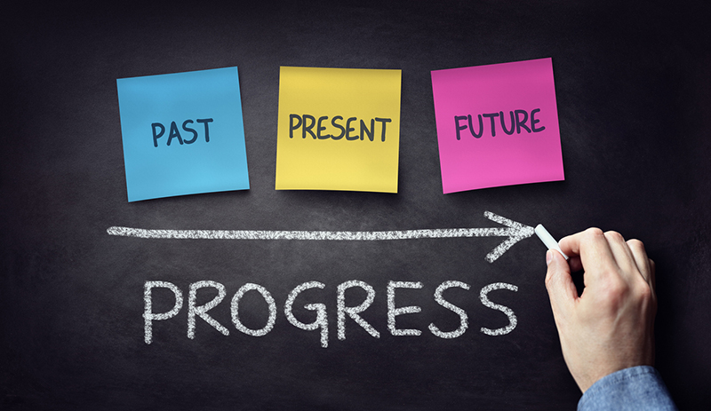

Desenvolvimento Pessoal: Primeira Pág Web
Esse site foi criado para o meu aprendizado de html, além da abordagem e compartilhamento de experiências, reflexões, dicas e tópicos como autoconhecimento, produtividade, inteligência emocional, hábitos saudáveis, relações interpessoais, oratória, entre outros.
Github